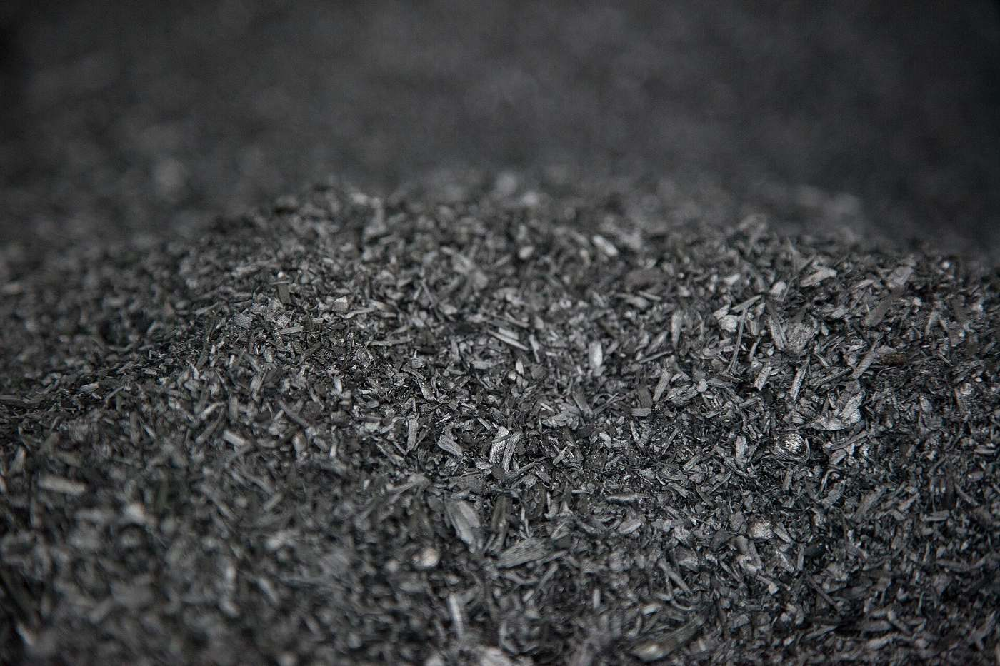
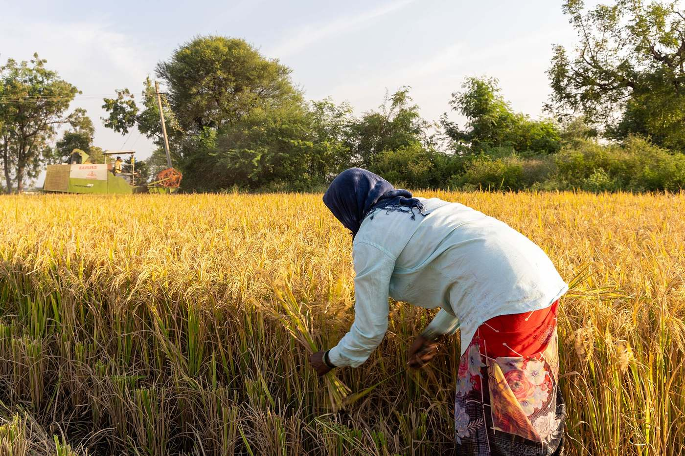
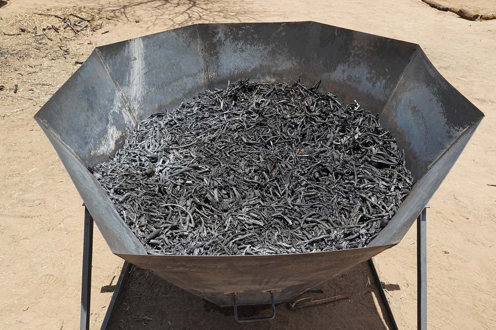

Green carbon, three ways
Purification, enrichment, and combustion carbon, built from renewable feedstock instead of mined coal.
Every product here begins as agricultural residue, carbonised and activated the same way coal is today, just without the mining.
One feedstock, three outputs

Treatment & purification
Activated carbon for water, air, and process purification. Porous carbon that adsorbs what needs to be removed, whether that is a contaminant in drinking water or colour in a sugar syrup.
Soil & crop enhancement
Stable carbon built for the soil rather than for combustion. High fixed carbon content and a pore structure that holds water and gives soil microbes somewhere to live.


Energy & power
Dense carbon fuel for kilns and boilers, engineered as a direct substitute for the mined coal those furnaces run on today.
A lower starting cost to the climate
The same carbon, further along
Research already under way elsewhere points to where biomass derived carbon goes after activated carbon.
Hard carbon anodes
Biomass derived hard carbon has shown 428 mAh/g reversible capacity and over 90% first cycle efficiency in published sodium ion battery research.
Graphene scale research
Academic work continues on extracting graphene grade carbon from biomass precursors. Early stage, and worth watching rather than promising today.